Multi-user Windows install
osFinancials / TurboCASH multi user Plugin
|
osFinancials / TurboCASH Multi user Plugin - Shop - Licence : Annual licence Documentation : osFinancials website - Manual Documentation : Help topic |
1a Installation of osFinancials / TurboCASH on the server:
If you wish to use osFinancials / TurboCASH in a network environment, you will have to decide first which PC will be your server.
If you have determined witch PC to use you can do a full osFinancials / TurboCASH installation.
Take care and install osFinancials / TurboCASH in a separate folder so the root folder can be shared between users.
c:\osf\osfinancials\
or
c:\tcash\turbocash\
Share the folder c:\osf (or c:\tcash) using windows folder sharing and give the correct user rights.
Open osFinancials / TurboCASH so the set of books list will be filled.
Close osFinancials / TurboCASH.
Use the Windows explorer to open the folder c:\osf\osfinancials\books (or c:\tcash\turbocash\books) to serverbooks.
Important:
If you wish to use simultaneous users with osFinancials / TurboCASH you MUST add users in Access control.
Create a user for everyone that will be using osFinancials / TurboCASH in "Access control". The fist user will be the user that hands out numbering for invoices, etc. You can set one ore more users to user there own numbering.
1b Firebird installation on the server
Install Firebird on the server:
We use the Firebird version 2.1. The install file (firebird.exe) is included in the full installation of osFinancials / TurboCASH installation folder.
This version of Firebird support recursive selects so you need this as a minimum.
Select full installation in the Firebird install.
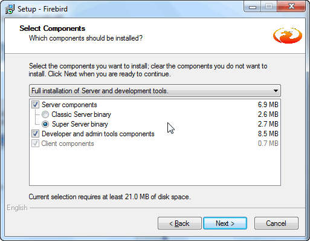
Tick all ticks and make sure its running as a service.
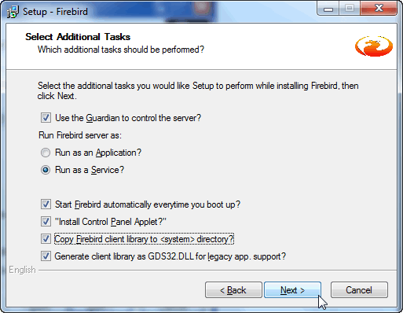
!!! Firebird uses port 3050 make sure its open in your firewall. !!!
1c Correcting the set of books on the server:
If you reopen osFinancials / TurboCASH and select the (red) set of books.
You need to press Properties to change the folder to the new serverbooks
c:\osf\osfinancials\serverbooks\youradmin\books.fdb
in the field Set of Books path
we also need the name or ip of this server PC
Start CMD prompt and type ipconfig /all
Try to find the hostname or, if that is not there the ip-address
Type this information into the field "Servername".
Adding additional databases / set of books on the server:
Use the Windows Explorer to find the serverbooks folder then copy an existing folder of a set of books and change the folder name.
Start up osFinancials / TurboCASH and use the Search button. Search for your copied set of books and locate the books.fdb.
Now check all the properties as explained in section "Correcting the set of books on the server".
Set of books located on a other server then the server that was used for the installation of osFinancials / TurboCASH:
The remote access to a set of books database is always referenced from the severs point of view.
Client installation:
The easiest way is to make a share to the server on the client PC.
There is no need to install osFinancials / TurboCASH on the client PC. You can just start osFinancials / TurboCASH by making a shortcut to the executable.
Note: If you have trouble connecting make sure the port 3050 is open on both the server and client.
osFinancials / TurboCASH on a Microsoft Server 2008
If you use a server 2008 it can be you need to exclude osFinancials / TurboCASH from DEP protection.
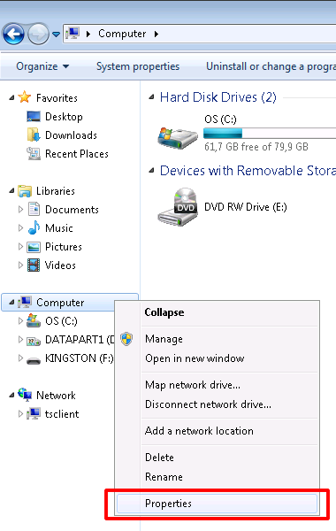
Select "Advanced system settings"
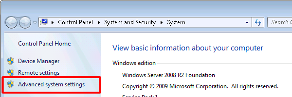
Select the tab "Advanced" tab.
And click on the “Settings” button.
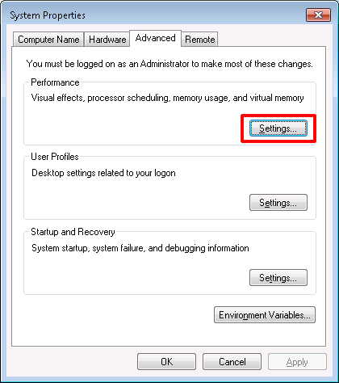
Check if the settings for DEP is either turned of or osFinancials / TurboCASH is excluded from DEP.
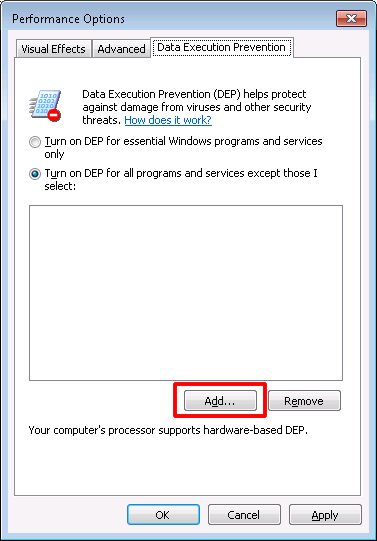
Browse to where osFinancials / TurboCASH is installed.
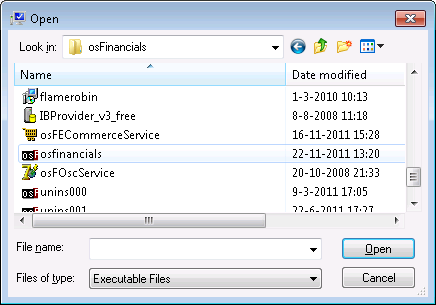
And select osFinancials.exe / TCASH5.exe or Accounting.exe and press Open.
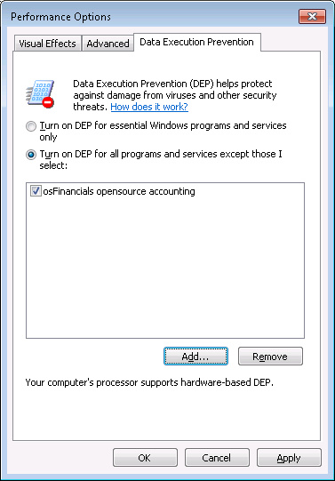
This will add osFinancials / TurboCASH to the exclude list.
Testing of the connection with FlameRobin
This is a optional feature and is not needed for osFinancials / TurboCASH to work correct.
But it does serve as a good way to test connections with the database.
The installation file, flamerobin.exe, is also in the osFinancials / TurboCASH installation folder.
Add a new server if you are on the client machine (you also need the client install of Firebird for this) of just use localhost if flame is running on the server.
- Start FlameRobin and click on Home.
- Using the right mouse button, select the Register server... option from the context menu.
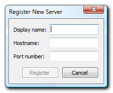
- Enter the following:
- Display name: - Enter an arbitrary name to recognize the server with and in the “Hostname” the IP-address of the server.
- Hostname: - Enter the IP-address (as found in the previous step using ipconfig).
- Port number: - Leave this field empty (default).
- Using the right mouse button, you can now select Register existing database... from the context menu on the newly added server. The next screen is displayed:
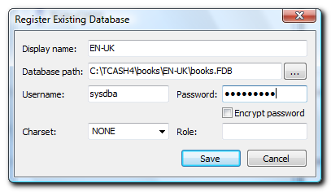
- Enter the following:
- Display name: - Enter the name you want to use for this particular set of books
- Database path: - Enter the full server path to the books.fdb
- Username: - Default username is sysdba
- Password: - Default password is masterkey.
- Click on the Save button and double-click on the added database. The database tables should now be reflected.

- You may click on the tables in the list to see the data of your Set of Books.
- If there is no connection problems you just successfully tested the database connection.
Creating users in Access control
If you database is set up properly there is still a need to create users in osFinancials / TurboCASH to make sure there is no conflicts when entering data.
Create user on the Standard security tab in Access control
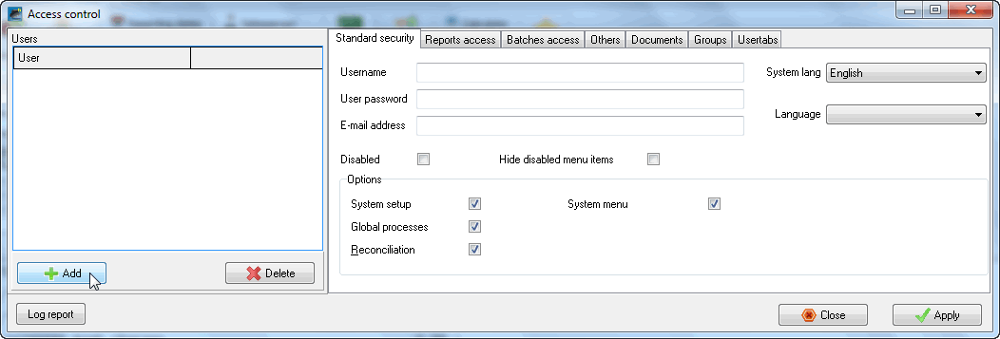
Use the Add button to add a new user.
Change the name of New user0 and enter a password for the new user.
Press Apply to save the changes.
You can limit rights for the new users in the tabs.
Adjusting the default password (Firebird)
This is for the experienced user that has knowledge of database management.
This will change the default password in Firebird and FlameRobin. This will not change the Password to Open a Set of Books in TurboCASH multi-user.
To change the standard (default) password of the standard username, i.e. sysdba on the database server, you need to use the gsec program of Firebird (located in C:\Program Files\Firebird\Firebird_2_1\bin folder).
Once you have completed the standard installation of osFinancials / TurboCASH and the Firebird database server is completed, you may launch the gsec application (i.e. C:\Program Files\Firebird\Firebird_2_1\bin\gsec.exe).
You can control the users and their passwords. In the gsec application, you may access the security database, by executing the following task via Windows Menu Start->Run:
"C:\Program Files\Firebird\Firebird_2_1\bin\gsec.exe" -database "C:\Program Files\Firebird\Firebird_2_1\security.fdb" - user sysdba -password masterkey
Or for the remote database
"C:\Program Files\Firebird\Firebird_2_1\bin\gsec.exe" -database "192.168.2.21:C:\Program Files\Firebird\Firebird_2_1\security.fdb" -user sysdba -password masterkey
(Note you need to enter the correct IP-address of the remote database). If you need to change the standard (default) password (i.e. masterkey), you may enter the command as follows:
modify sysdba -pw mypassword
This will set or change the master password to mypassword (as in this example).
Firebird can accommodate case sensitive passwords to the maximum of up to 8 characters. The rest of the characters (more than 8) is ignored when enterted (e.g. 10 character password mypassword). As per this 10 character password, you may enter up 8 characters, e.g. mypasswo, the last 2 characters will be ignored.
You may also add other users, and manage the user-rights over the database tables in TurboCASH. This is not covered in this documentation. You may find comprehensive information on the various commands and features at the Firebird website, i.e. http://www.firebirdsql.org/manual/.
Firebird tuning
The firebird.conf file can be edited manually to optimise the performance of the Firebird Database Server.
For example, if you have set that the application to run on two processors, or the initial allocated memory before the database is loaded, etc.
By default, it just uses 1 processor and the allocated memory is not much. These adjustments should make it faster if you have more data and can use the multiprocessor in the server to its full extend.
In the firebird.conf file you will find some basic guidelines (documentation) about the parameters working and settings. This section includes some tips to increase the performance.
1 - Number of cashed database pages
# Number of cached database pages
#
# This sets the number of pages from any one database that can be held
# in cache at once. If you increase this value, the engine will
# allocate more pages to the cache for every database. By default, the
# SuperServer allocates 2048 pages for each database and the classic
# allocates 75 pages per client connection per database.
#
# Type: integer
#
#DefaultDbCachePages = 2048
To change the setting:
After the Type: integer line, you may add your name preceded by the comment # symbol and a description e.g. Adjusting Server Performance
|# Danie Adjusting Server Performance
Change the value if necessary, e.g. 2048
|DefaultDbCachePages = 8192
You may use the following KB to Bytes Conversion table (located at the end of the firebird.conf file) to select the correct values:
#######################################
#
# KB to Bytes Conversion table
#
#######################################
#
# KB Bytes KB Bytes
# ---- --------- ---- ---------
# 1 1024 32 32768
# 2 2048 64 65536
# 4 4096 128 131072
# 8 8192 256 262144
# 16 16384 512 524288
#
#######################################
2 - Which CPUs should be used (Windows Only)
# In an SMP system, sets which processors can be used by the server.
# The value is taken from a bit map in which each bit represents a CPU.
# Thus, to use only the first processor, the value is 1. To use both
# CPU 1 and CPU 2, the value is 3. To use CPU 2 and CPU 3, the value
# is 6. The default value is 1.
#
# Type: integer
#
#CpuAffinityMask = 1
To change the setting:
After the Type: integer line, you may add your name preceded by the comment # symbol and a description e.g. Adjusting Server Performance
|# Danie Adjusting Server Performance
Change the value if necessary, e.g. 3
|CpuAffinityMask = 3